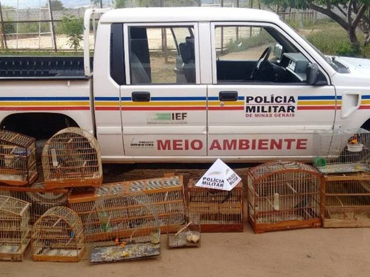
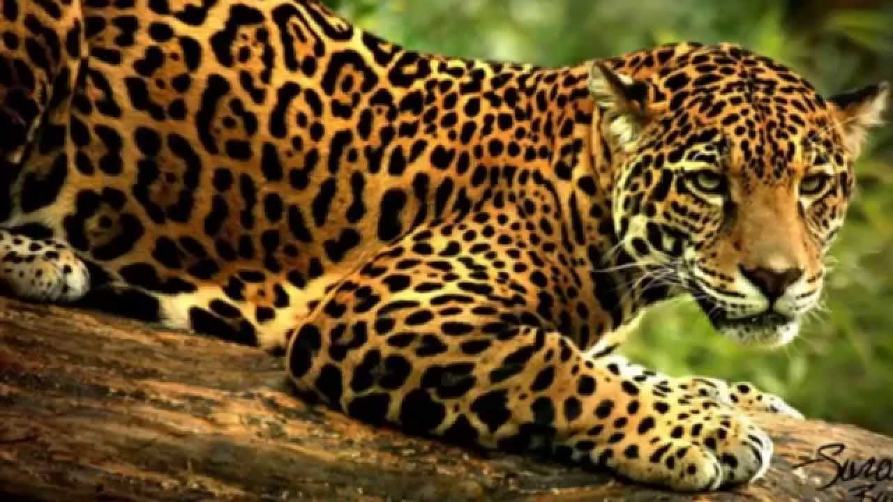
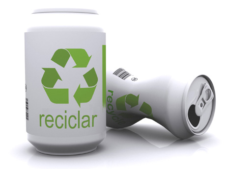
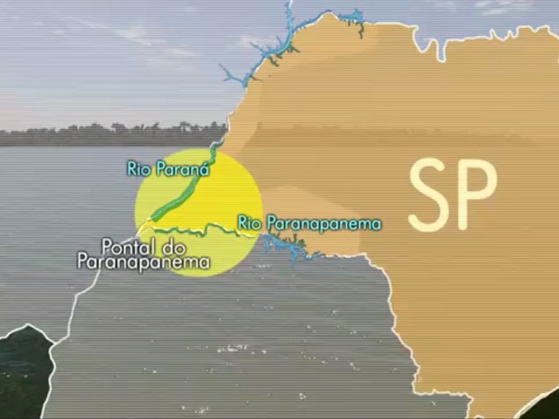
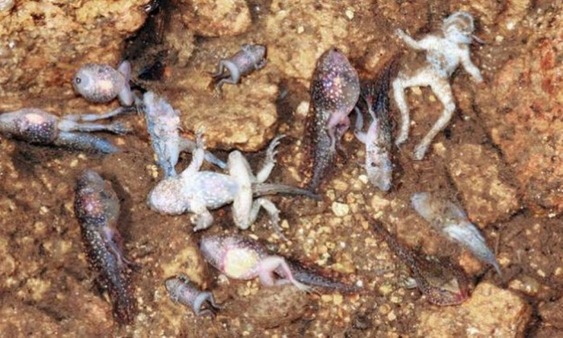
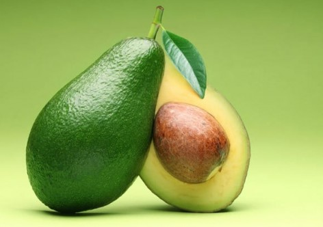

Notícias | ||
|
14/03/2017 | Por: Maira Lima | G1 Grande Minas Polícia de Meio Ambiente apreende 33 pássaros silvestres em Espinosa Animais foram encontrados em dois Povoados. PM chegou aos locais após denúncia; um homem foi preso.  |
13/03/2017 | Por: Giuliana Miranda | Folha de São Paulo Projeto de lei quer liberar caça de animais selvagens no país Um projeto de lei pretende regulamentar a caça de animais silvestres, proibida em todo o território nacional desde 1967.  |
03/11/2016 | Por: Fernanda Couzemenco | Século Diário Meio ambiente é algo que começa dentro de nós A expansão da consciência ambiental se dá quando o meio ambiente começa dentro de cada um de nós.  |
|
12/03/2017 | Por: Vico Iasi | G1 Natureza Projeto com pecuaristas e pequenos proprietários recupera a Mata Atlântica Recuperação de florestas cria uma nova economia no Pontal do Paranapanema. Animais nativos voltam a circular na região.  |
14/03/2017 | Por: Gonçalo Rosa | O Globo Vírus letal para anfíbios está se alastrando por Portugal Parque Nacional da Serra da Estrela registra mortandade em massa de sapos.  |
14/03/2017 | Por: Marcos Romero | Portal Vermelho Abacate passa petróleo e é produto mais lucrativo do México Em 2016, exportações estabeleceram marca histórica e geraram superávit de US$ 2,2 milhões.  |